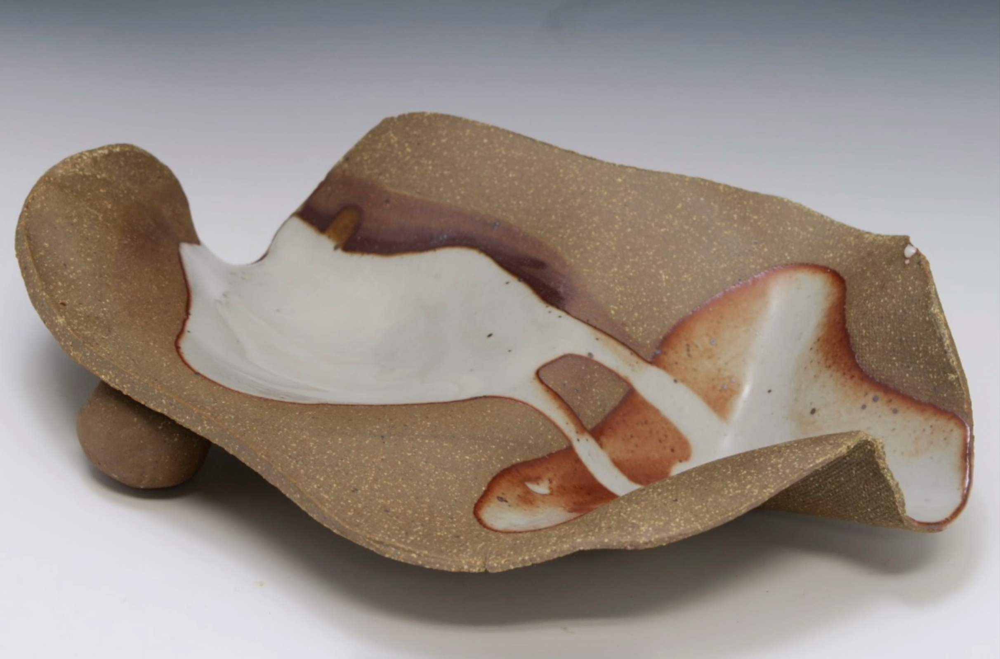
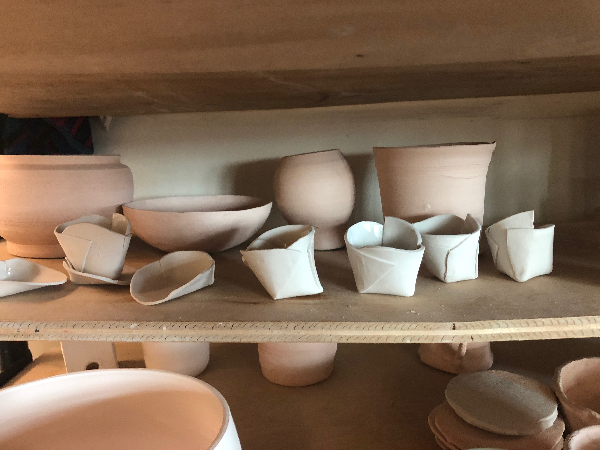
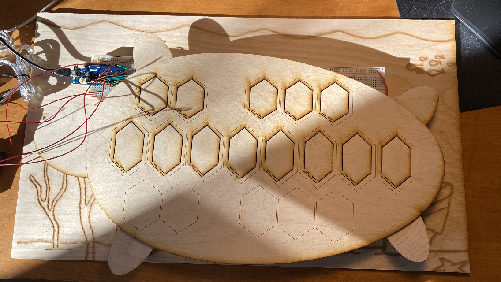
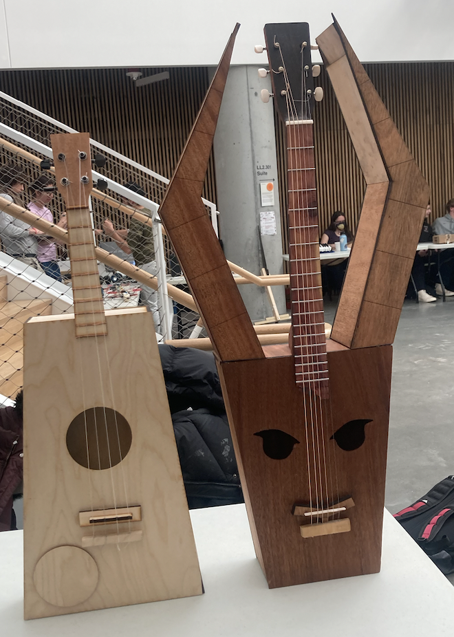

about
Hi, I'm Kyra! I'm a junior in Currier House, studying CS and English, and now digital fabrication. Here, I will document each week of thinking, building, and coding for PS70. Outside of my studies, I like writing poetry and short stories, illustrating, taking photos, and carving woodcuts. I'm also currently organizing a conference on women in engineering, and previously led research on the Harvard Satellite Team (and the proposal towards NASA launch approval)!some previous projects are:
Ceramics balancing-ware, of which I only have a few left (the rest tipped over).
origami teacups

turtle-shell electric piano keyboard and a goat-lyre for GENED1080, with group members Lillian Petersen and Patrick Thornton.  
Website illustrations and designs are my own; the skeleton and three-grid system is built off of Cassia's PS70 website, github @c2bstewart.